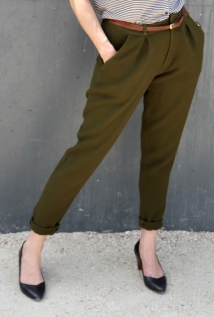
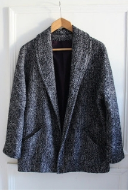
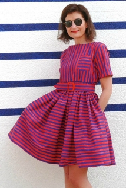

I worked for 5 years at Oxfam France, organizing the Trailwalker (a team of 4, walking 100km under 30h - raising funds for Oxfam).
I decided to dig into code because i like to create stuff and i'm into digital and tech !
Learn more about le Wagon|  |
Guise Pants (Papercut Pattern)These pants are an absolute must have, the perfect balance of comfort and cool. You can rest easy knowing you'll always have the perfect pants to throw on whilst also feeling comfortable. Featuring stand out inverted pleats, zip fly, side front pockets, back welt pockets with button closure and an elasticated back waist band. |
|  |
Aime comme Montmartre (Aime comme Marie)Montmartre jacket is all about simple, casual elegance. Even though it is fully lined, there are very few pattern pieces to cut due to the shawl collar and the sleeves smartly attached to the front. Impeccable finishes and sophisticated looks are just a quick sewing project away! As for the fabric, try garbardine, melton wool or soft fleece. |
|  |
Frida Dress (Make my Lemonade)Frida is the first Wear Lemonade pattern. She was created a few years ago. You may know her under the name of «my Favorite Dress». And she surely will be your favorite best friend with her nice confortable cut, her belt for the elegance and the two useful pockets ! |